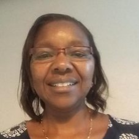

Philomena N. Ngugi, PhD
Spring 2023 Trainee
Dr. Ngugi is currently a Tutorial Fellow and Researcher at Moi University (Kenya) and has been teaching courses in information technology, computer science, and health informatics for over 18 years. Dr. Ngugi received her MSc. of Information Technology Management from the University of Sunderland (UK) in 2005 and obtained her PhD in Health Informatics from the University of Bergen (Norway) in 2021. She joined the DSSD program as a 2023 trainee and is currently working on a project proposal which will be shared soon. Dr. Ngugi also holds membership in the Kenya Health Informatics Association (KEHIA) and Norwegian Research School of Global Health (NRSGH).